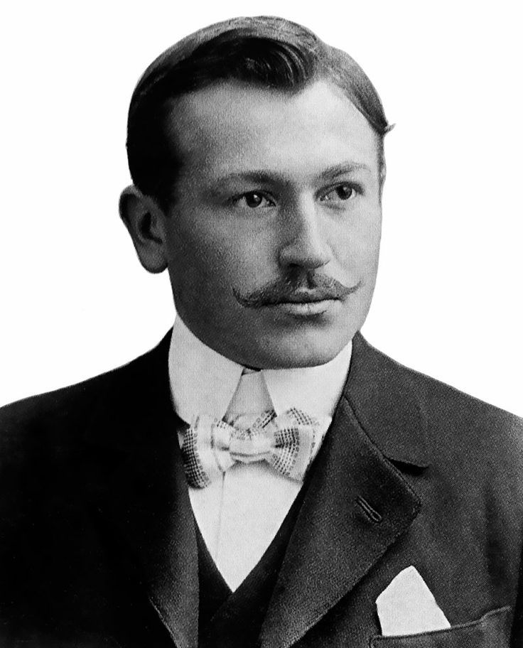
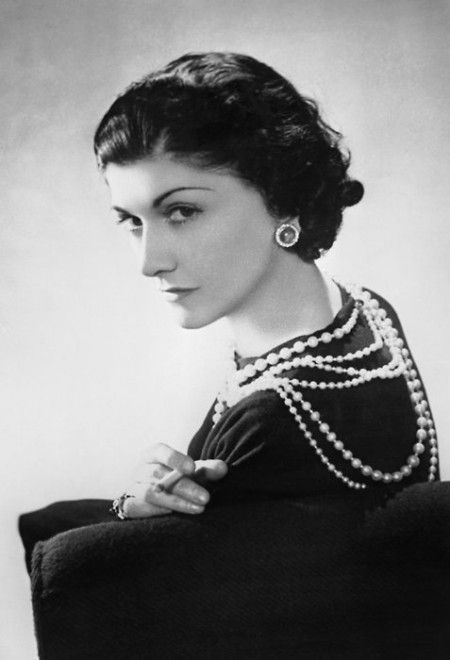
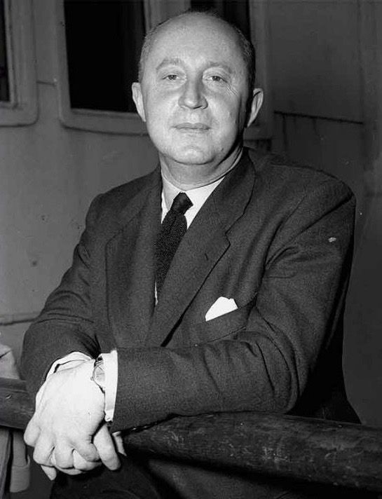
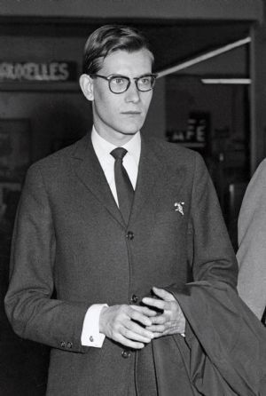
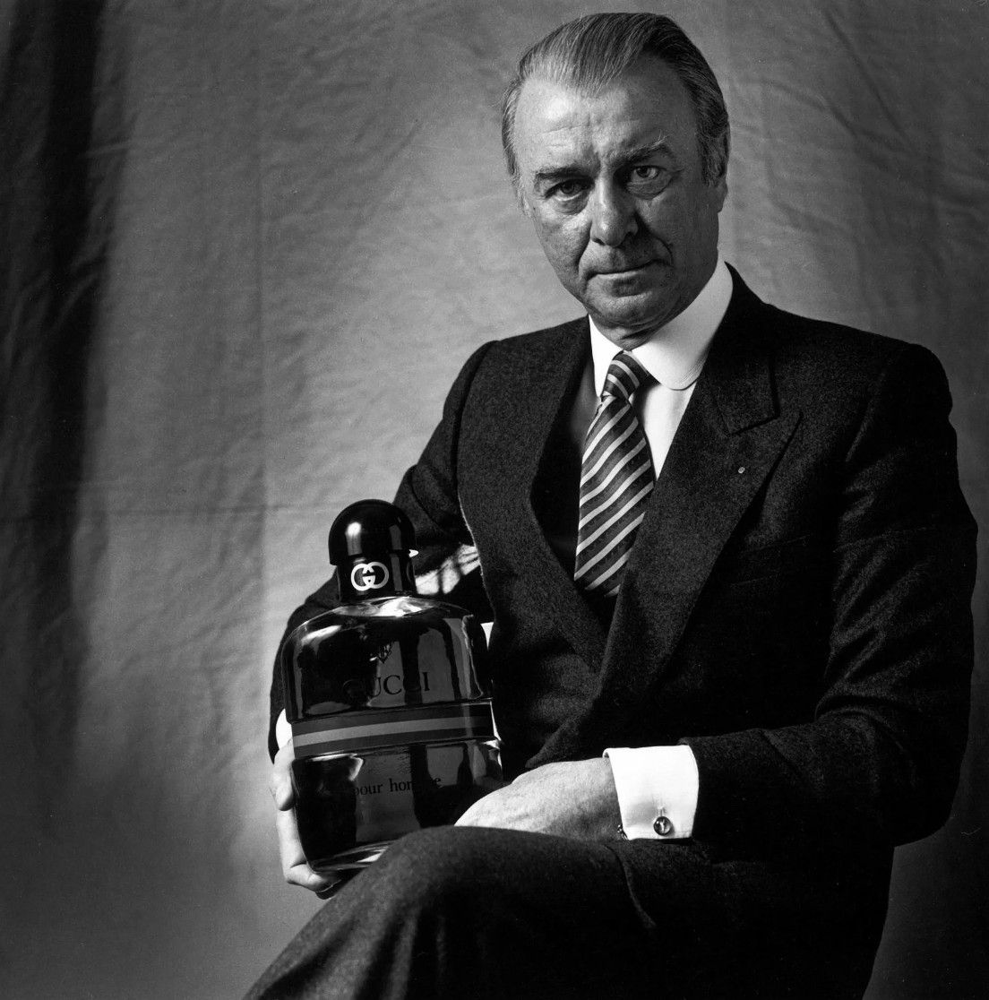

Meet the visionaries who created some of the world's most prestigious luxury fashion houses.

Brand: Hermès
Founded Hermès in 1837 as a harness workshop in Paris. His dedication to craftsmanship became the foundation of the brand's luxury reputation.

Brand: Chanel
Revolutionized women's fashion through simplicity, elegance and practicality. Founded Chanel in 1910.

Brand: Dior
Founded Dior in 1946 and introduced the famous New Look collection, shaping post-war fashion.

Brand: Saint Laurent
Founded Saint Laurent in 1961 and became one of the most influential designers in fashion history.

Brand: Gucci
Founded Gucci in 1921 in Florence, Italy. His luxury leather goods became internationally recognized.
These founders transformed luxury fashion through innovation, craftsmanship and creative vision. Their brands continue to influence fashion, culture and luxury markets worldwide.
- Coco Chanel